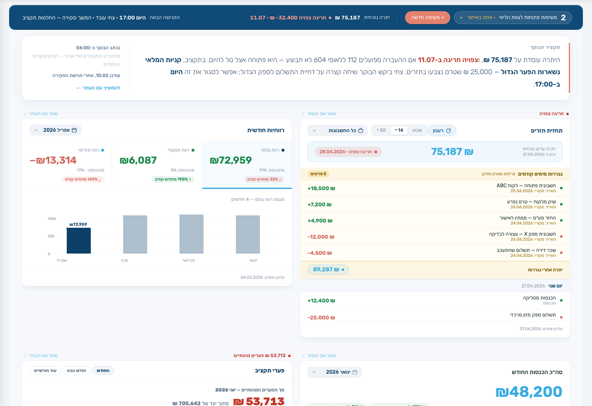

מערכת
המערכת שלך
כל העבודה עם הלקוחות במקום אחד.
הנתונים, הפגישות, היעדים, המשימות, התזרים וההיסטוריה של כל לקוח — מחוברים לתמונה אחת.
במקום לעבוד בין מערכות, קבצים, WhatsApp וזיכרון אישי — יש לך סביבת עבודה אחת לכל המשרד.
